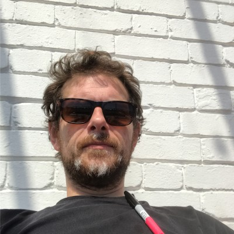

Andy Niblo
Web Developer
In a nutshell
I am a data scientist, full stack software developer and filmmaker.
Education
- Foundation Art & Design (Cumbria Institute of the Arts)
- BSc Psychology with Neuroscience (Birkbeck College, University of London)
- MSc Data Science (Birkbeck College, University of London)
Career
-
Production Manager
2013-2023
- Assisting and managing photo shoots
-
Business Development Representative
2022
Skills
- JS, Node, React, Python, SQL, Azure ⭐️⭐️⭐️⭐️⭐️
- Photoshop, Premiere, After Effects, Audition ⭐️⭐️⭐️⭐️⭐️
Awards & Certifications
- Best Short Film - Smodcastle Festival 2023
Links
My Hobbies
Contact
© Andy Niblo - 2023 - All Rights Reserved